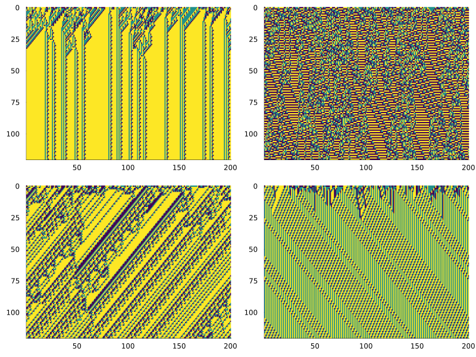
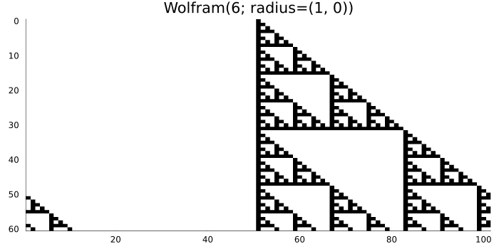
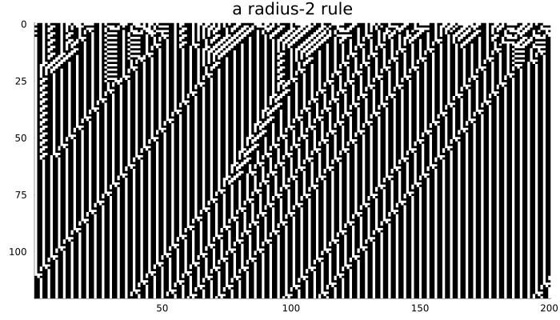
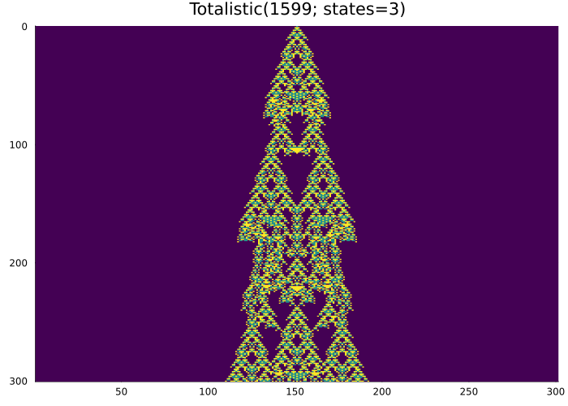
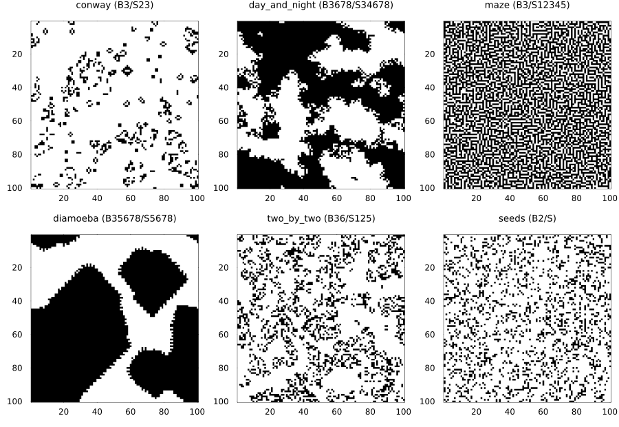
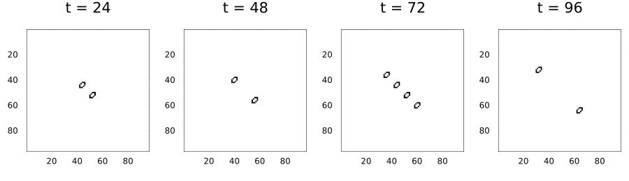
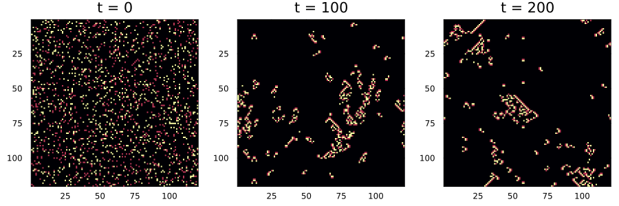
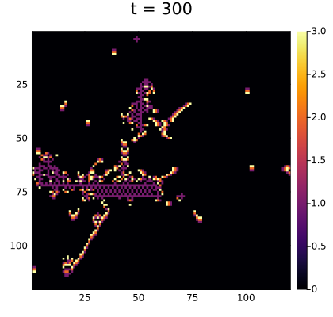
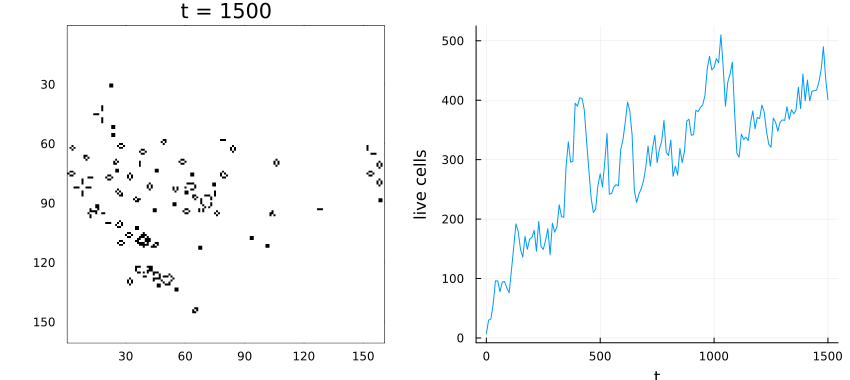

Rule families
Simon Frost
- Overview
- Wolfram codes
- Totalistic rules
- Life-like rules
- Generations rules
- Reading and writing patterns
- Checking rules against their definitions
Overview
CellularAutomataCore.jl has four built-in families of rules, each specified by a number or a short string:
| family | space | specified by |
|---|---|---|
Wolfram | one-dimensional | a code number, states, radius |
Totalistic | one-dimensional | a code number, states, radius |
Life | any lattice or graph | a birth/survival string such as "B3/S23" |
Generations | any lattice or graph | a string such as "B2/S/C3" |
Any other rule can be written as a function (custom local rules). This vignette also covers reading and writing patterns in the run-length-encoded (RLE) format.
ENV["GKSwstype"] = "100"
using CellularAutomataCore
using Plots
using Random
spacetime(rule, u, n; kw...) = plot(solve(CAProblem(rule, u, n)); c=:binary, colorbar=false,
xlabel="", ylabel="", kw...)Wolfram codes
A Wolfram(code; states=k, radius=r) rule reads the window of $2r + 1$ cells centred on a cell, interprets their states left to right as a base-$k$ number $i$, and sets the cell to digit $i$ of code written in base $k$. For rule 30 the eight digits, from window 000 to window 111, are:
digits(30; base=2, pad=8)8-element Vector{Int64}:
0
1
1
1
1
0
0
0so the window 100 (number 4) maps to digit 4 of the code, a 1.
More states
With three states there are $3^3 = 27$ windows and $3^{27} \approx 7.6 \times 10^{12}$ rules. Most random codes are chaotic:
rng = Xoshiro(7)
u = Int8.(rand(rng, 0:2, 200))
codes = [rand(rng, 0:(big(3)^27 - 1)) for _ in 1:4]
plot([spacetime(Wolfram(c; states=3), u, 120; c=:viridis, title="") for c in codes]...;
layout=(2, 2), size=(800, 600))
Wider and one-sided windows
radius can be a tuple (left, right). A rule with radius (1, 0) reads only the cell and its left neighbour, so information flows only rightwards. Code 6 (binary 0110) makes each cell the exclusive-or of itself and its left neighbour, which is elementary rule 60:
u = Int8.(rand(Xoshiro(2), 0:1, 101))
final_state(solve(CAProblem(Wolfram(6; radius=(1, 0)), u, 40))) ==
final_state(solve(CAProblem(Wolfram(60), u, 40)))truespacetime(Wolfram(6; radius=(1, 0)), single_seed(101), 60; size=(700, 350),
title="Wolfram(6; radius=(1, 0))")
Radius-2 rules read five cells and have $2^{32}$ codes:
spacetime(Wolfram(1_635_609_034; radius=2), Int8.(rand(Xoshiro(3), 0:1, 200)), 120;
size=(700, 400), title="a radius-2 rule")
Totalistic rules
A totalistic rule depends only on the sum of the states in the window, which keeps the number of rules manageable for more states. With $k$ states and radius $r$ the sum ranges over $0, \ldots, (2r + 1)(k - 1)$, and digit $s$ of the code (in base $k$) is the new state for sum $s$. Code 1599 with three states is one of Wolfram’s examples of long, irregular transients:
spacetime(Totalistic(1599; states=3), single_seed(301), 300;
c=:viridis, size=(700, 500), title="Totalistic(1599; states=3)")
Life-like rules
Life covers the two-state “outer totalistic” rules on any lattice: a dead cell is born if its number of live neighbours is in the birth set, and a live cell survives if the number is in the survival set. Rules are written in B/S notation; the older S/B notation is also read.
Life("B36/S23"), Life("23/36")(Life("B36/S23"), Life("B36/S23"))Several well-known rules have names:
sort([string(k) => v for (k, v) in LIFE_PRESETS])11-element Vector{Pair{String, String}}:
"conway" => "B3/S23"
"day_and_night" => "B3678/S34678"
"diamoeba" => "B35678/S5678"
"highlife" => "B36/S23"
"life_without_death" => "B3/S012345678"
"maze" => "B3/S12345"
"morley" => "B368/S245"
"replicator" => "B1357/S1357"
"seeds" => "B2/S"
"thirty_four" => "B34/S34"
"two_by_two" => "B36/S125"The same random start gives very different results under different rules:
soup = Int8.(rand(Xoshiro(11), 0:1, 100, 100))
presets = [:conway, :day_and_night, :maze, :diamoeba, :two_by_two, :seeds]
panels = map(presets) do name
u = name == :seeds ? place!(zeros(Int8, 100, 100), soup[1:6, 1:6]) : soup
plot(solve(CAProblem(Life(name), u, 120)); c=:binary, colorbar=false,
title="$(name) ($(rulestring(Life(name))))", titlefontsize=9)
end
plot(panels...; layout=(2, 3), size=(900, 620))
(Seeds grows explosively from almost any pattern, so it was started from a small 6 × 6 seed rather than the whole soup.)
HighLife’s replicator
HighLife (B36/S23) differs from Conway’s rule only in that six neighbours also cause a birth. That small change makes room for a replicator, a pattern that copies itself:
replicator, _ = parse_rle(raw"""
x = 5, y = 5, rule = B36/S23
2b3o$bo2bo$o3bo$o2bo$3o!
""")
u = place!(zeros(Int8, 96, 96), replicator)
sol = solve(CAProblem(Life(:highlife), u, 96); saveat=24)
plot([plot(sol; snapshot=i, c=:binary, colorbar=false) for i in 2:5]...;
layout=(1, 4), size=(900, 260))
Generations rules
Generations rules add dying states. A live cell that does not survive does not die at once but passes through states 2, …, C - 1 before becoming dead; dying cells neither count as live neighbours nor can be reborn. Brian’s Brain (B2/S/C3) has no survival at all, so every live cell dies after one step and spends one step dying, which produces streams of moving “brains”:
soup3 = Int8.(rand(Xoshiro(5), 0:2, 120, 120) .* (rand(Xoshiro(6), 120, 120) .< 0.2))
sol = solve(CAProblem(Generations(:brians_brain), soup3, 200); saveat=100)
plot([plot(sol; snapshot=i, c=:inferno, colorbar=false) for i in 1:3]...; layout=(1, 3),
size=(900, 300))
Star Wars (B2/S345/C4) adds survival and a longer decay:
sol = solve(CAProblem(Generations(:star_wars), soup3, 300))
plot(sol; c=:inferno, size=(420, 400))
With C = 2 a Generations rule is the Life rule with the same B/S:
u = Int8.(rand(Xoshiro(9), 0:1, 40, 40))
final_state(solve(CAProblem(Generations("B3/S23/C2"), u, 50))) ==
final_state(solve(CAProblem(Life(), u, 50)))trueReading and writing patterns
parse_rle reads run-length-encoded text, the format used by Golly and the LifeWiki: b is a dead cell, o a live one, a number repeats the next tag, $ ends a row and ! ends the pattern. It returns the pattern (rows top to bottom) and the rule named in the header, if any.
acorn, rule = parse_rle(raw"""
#N Acorn
#C A methuselah: on an unbounded plane these seven cells take 5206 generations to stabilise.
x = 7, y = 3, rule = B3/S23
bo5b$3bo3b$2o2b3o!
""")
acorn, rule(Int8[0 1 … 0 0; 0 0 … 0 0; 1 1 … 1 1], "B3/S23")On a 160 × 160 torus the acorn’s debris wraps around and interacts, so it settles differently, but it still grows for a long time:
u = place!(zeros(Int8, 160, 160), acorn)
sol = solve(CAProblem(Life(rule), u, 1500); saveat=10)
plot(plot(sol; c=:binary, colorbar=false),
plot(sol.t, [count(==(1), x) for x in sol.u]; xlabel="t", ylabel="live cells",
legend=false);
layout=(1, 2), size=(850, 380))
rle_string and write_rle go the other way. Patterns with more than two states use . for 0 and A, B, … for 1, 2, …:
print(rle_string(replicator; rule=Life(:highlife)))
print(rle_string(Int8[0 1 2; 2 1 0]; rule=Generations(:brians_brain)))x = 5, y = 5, rule = B36/S23
2b3o$bo2bo$o3bo$o2bo$3o!
x = 3, y = 2, rule = B2/S/C3
.AB$BA!and parse_rle reads them back:
parse_rle(rle_string(acorn))[1] == acorntrueChecking rules against their definitions
Each family is tested against an independent implementation written from its definition. For example, rule 90 from a single seed must reproduce Pascal’s triangle modulo 2:
n, T = 65, 32
sol = solve(CAProblem(Wolfram(90), single_seed(n), T))
c = cld(n, 2)
all(sol.u[t + 1][c + x] == (iseven(t + x) && isodd(binomial(t, (t + x) ÷ 2)))
for t in 0:T for x in (-t):t)true